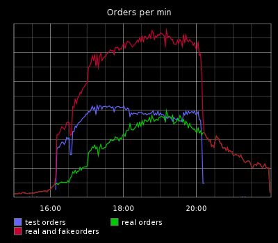
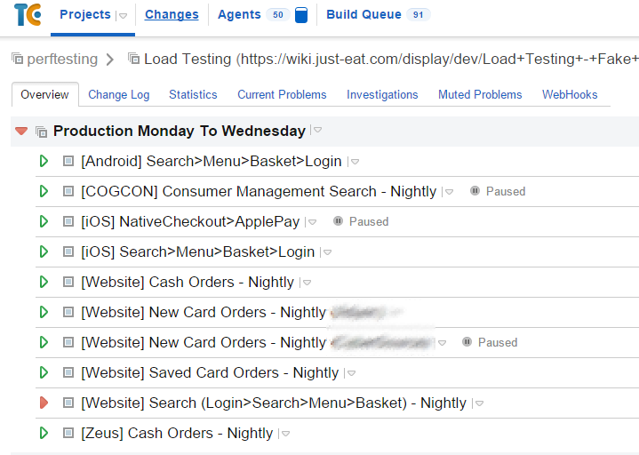
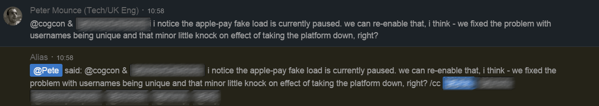

DoS yourself in production every night to prove you can take it
@petemounce
@justeat_tech
Any questions?
Shout them out as we go. That's more fun.
Who are JUST EAT?
Performance?
When do you suppose peak time is?
the same time we DoS ourselves, of course!

We have cyclic demand
The problem with continuous delivery
Everyone wants to change everything, all the time.
Traditionally, bottleneck through a single performance-testing environment
Individual tests take too long
But of course...
So, test all the time
So, test in production
Let's just do it in production with fake traffic at the same time as customers!
We deploy 10s of small changes a day and we have alerts. I bet we won't break production (without noticing)
Reasons why this isn't insane
Tight feedback loops
Engineers support what they ship... and so are highly invested in not regressing non-functionals.
How did we start doing this?
Technology aspects and people aspects
Choose scenarios we care about
Choose a load agent
Gain confidence outside of peak time
(This part is also about reassuring stakeholders that you've got it all under control...)
Start adding data variety
Make the computer do it every day
This is the most vital part!

Get more elaborate later
Fake away external dependencies
x-traffic-flavour: fake
And even more elaborate...
Fake away more complicated things
How have we kept doing this?
... and what did we learn to do better
Don't allow tests to be red (for long)
Need to tune levels over time
Embrace the fact that things break
What battle scars did we get... lately?
All of these would have hurt badly if we hadn't had the ability to turn the pain off ourselves
Find unbounded result sets before customers
Monitoring needs to be solid!
Realise AWS account limits are closer than we thought
Realise our haproxy was badly misconfigured
Realise we're not as smart as we think

Peace of mind, #1
Continuous, early, warning about:
- getting slower
- running out of capacity
Discovered problems during peacetime not peak time
Peace of mind, #2
Good, simple, clear operational response to most surprises:
Is fake load running? Stop it.
Scale up
Now, start to think
Peace of mind, #3
If we find a problem Thursday night:
- Turn off fake load for the weekend
- Enjoy weekend
- Fix it next week with less pressure
Performance & operability == 1st class concern
Alerts become automated tests in production
git push production is one step closer
Continuous testing in production can be applied to more than just performance & capacity